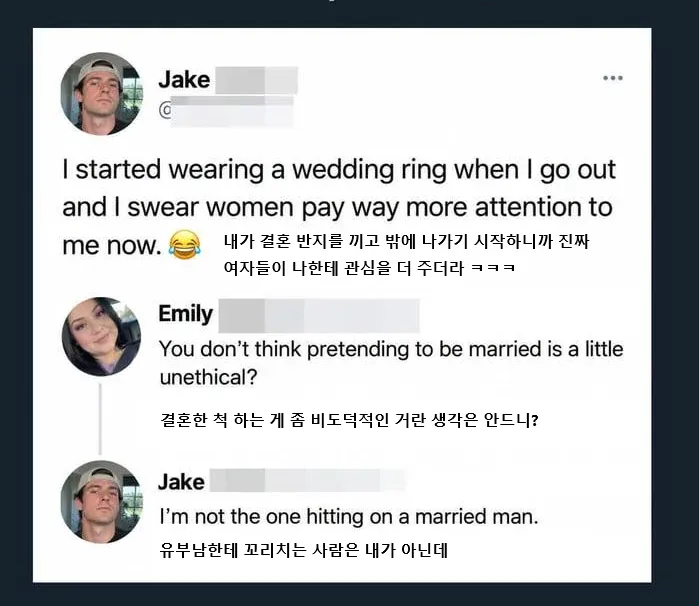

어떤 싱글남이 결혼 반지를 끼고 다니는 이유
댓글
이쁜 외모 보고 덤비는 남자 > 정상
기혼남 상대 배덕쾌락 여자 > 비정상
프랑스인가?
유 메믹 미 두 뎃 ㅠㅠ
보추인줄 알고 만났는데 보추가 아니면 개빡칠거같은데
가족관계증명서 떼면서까지 확인할건 아니잖아!
보추는 팬티벗기면 바로 티나지만
반대도 빢칠거같긴한데
남에떡
근데 진짜로 모솔인애들은 여자친구 있는척하는게 더 낫다
대신 인스타 sns 안하고 카톡 프사 기본프사여야함
그러면 여자들이 좋아함
유부남이 싱글인척하는건 비도덕적일 수 있는데
그반대는 뭐 비도덕적일게 있나?
신기하네.. 보통 유부남이라고 하면 안건들지않나
남의떡
남의것 뻇어먹는거 좋아하는 여자 심리.
물론 남자도 그런인간이 있긴합니다. 조조계열
ㄹㅇ이가?!
그러니까 그거네 아예 게이거나 아님 아내가 있거나
하면 없는애보단 관계가 편하니까 친구처럼 대해주는듯
이거일 듯 싱글보단 유부남이 대하기 편하니까
시발 맞는말 ㅋㅋㅋㅋㅋㅋㅋ
이쁜척 화장하는거랑 뭐가달라 ㅋㅋㅋㅋㅋㅋ